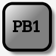
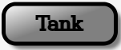
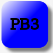
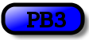
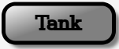
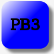
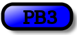
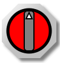
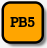

MBLogic
for an open world in automation
MBLogic
for an open world in automation
Help - HMI Push Buttons
Overview:

 





Push buttons are used to react to a user mouse click. They are typically used to write a value to the server data table. However, other actions can also be initiated provided there is a function available to be called.
SVG Library Graphics:
Common Definitions
The push buttons all use the standard drop shadow filter to provide a shaded background. This is also used by many other graphics, so it needs to be defined once only. The "nut" graphic is used to provide a "nut" shape to the selector switches. It is also used for other graphics.
<defs> <!-- The following filter is used to add a drop shadown. --> <filter id="MB_DropShadowFilter"> <feGaussianBlur stdDeviation="2"> </feGaussianBlur> </filter> <!-- This is a decorative octagonal nut. --> <g id="MB_NUT"> <polygon transform="translate(5,5)" fill="grey" stroke="none" filter="url(#MB_DropShadowFilter)" points="18,-45 -18,-45 -45,-18 -45,18 -18,45 18,45 45,18 45,-18 18,-45" /> <polygon fill="url(#MB_SilverGradient)" stroke="none" points="18,-45 -18,-45 -45,-18 -45,18 -18,45 18,45 45,18 45,-18 18,-45" /> </g> </defs>
Square Push Buttons
The square push button is composed of two square rectangles. The first is used to provide a drop shadow. The second provides the actual button. The rectangles are offset such that the centre of the button is the currrent X and Y location.
The fill colour, text label, and stroke width are defined when the button is actually used.
<defs> <!-- Square push button. 80 x 80 px. --> <g id="MB_SquarePB"> <!-- This rectangle is used for the drop shadown and needs to match the size used for the button. --> <rect x="-33" y="-33" width="80" height="80" rx="15" fill="grey" stroke="none" stroke-width="0px" filter="url(#MB_DropShadowFilter)"/> <!-- This is the actual button. --> <rect x="-40" y="-40" width="80" height="80" rx="15"/> </g> </defs>
Rectangular Push Buttons
The rectangular push button is similar to the square push button, but is both wider and shorter. This may be useful for cases where a longer text label is desired.
<defs> <defs> <!-- Rectangular push button. 140 x 50 px --> <g id="MB_RectangularPB"> <!-- This rectangle is used for the drop shadown. --> <rect x="-63" y="-18" width="140" height="50" rx="15" fill="grey" stroke="none" stroke-width="0px" filter="url(#MB_DropShadowFilter)"/> <!-- This is the actual button. --> <rect x="-70" y="-25" width="140" height="50" rx="15"/> </g> </defs>
Oblong Push buttons
The oblong push button is smaller than the rectangular push button, and is designed for applications where a longer text label is desired, but the button must still fit in a minimal space.
<defs> <!-- Oblong push button. 100 x 36 px --> <g id="MB_OblongPB"> <!-- This rectangle is used for the drop shadown. --> <rect x="-43" y="-11" width="100" height="35" rx="15" fill="grey" stroke="none" stroke-width="0px" filter="url(#MB_DropShadowFilter)"/> <!-- This is the actual button. --> <rect x="-50" y="-18" width="100" height="36" rx="15"/> </g> </defs>
Two and Three Position Selector Switches

A selector switch in the HMI system acts as an output indicator as well as an input device. The switch can be rotated to indicate the current state of the monitored value in the controller. This allows the switch to combine the functions of a push button and pilot light in one device.
The actual selector switch does not include the labels. These much be added separately, as shown below. The selector switch itself can assume any rotation angle, allowing any number of positions.


The selector switch consists of an octagonal "nut", an inner circular area, a rectangular "actuator" area (where your fingers would grip on a real selector switch), and a small triangular "dot". The circular area may be any colour and is defined when the switch is used.
<!-- Selector switch. --> <defs> <!-- This is a selector switch with a grey actuator. The circular base can be coloured using the fill property.--> <g id="MB_SSwitch"> <!-- This is a decorative nut. --> <use xlink:href="#MB_NUT"/> <!-- This forms the circular rotating inner area of the switch. --> <circle cx="0px" cy="0px" r="35px" stroke="black" stroke-width="5px"/> <!-- This is the rotating actuator. --> <rect x="-8" y="-33" width="16" height="66" rx="5" fill="grey" stroke-width="2px"/> <polygon fill="white" points="0,-30 -5,-20 5,-20 0,-30" /> </g> </defs>
Illuminated Push Buttons

Any push button may be turned into an illuminated push button by making the "fill" colour dynamic instead of using a fixed colour. The details of this are discussed below.
Creating Push Buttons
To turn the graphics into active push buttons, the graphics must be combined with some Javascript scripting, and possibly some text labels. Combining this in different ways results in different types of push buttons. These are shown below.
Each push button will have the following components:
- A locating transform. This is a statement used to position the button in the desired location. For example: transform="translate(100,0)" will move the button to X=100 and Y=0. Note that transformations may be nested.
- A "fill" statement which determines the colour. For example: fill="url(#MB_GreyGradient)"
- Some Javacript commands calling the required MBHMIProtocol function to write data to the control system.
- Either a reference to the library, or a user created graphic made from basic SVG elements. For example: <use xlink:href="#MB_SquarePB" />
- An optional text label using a "text" statement. E.g. <text x="0" y="8" font-size="24" stroke-width="2px" text-anchor="middle">PB1</text>.
- An optional CSS class label to connect it with the CSS definitions which provide styling and visual effects. E.g. class="buttonactivate"
Momentary Push Buttons:
A momentary push button is a button which takes one action when pressed, and another action when released. This means there are two individual actions which must be initiated at different times.
SVG
<!-- This first button illustrates a momentary push button. -->
<g transform="translate(100,0)" fill="url(#MB_GreyGradient)"
class="buttonactivate"
onmousedown="MBHMIProtocol.WriteImmediate('PB1', 1);"
onmouseup="MBHMIProtocol.WriteImmediate('PB1', 0);"
onmouseout="MBHMIProtocol.WriteImmediate('PB1', 0);">
<!-- This is the actual button. -->
<use xlink:href="#MB_SquarePB" />
<!-- This is the text label. -->
<text x="0" y="8" font-size="24" stroke-width="2px"
text-anchor="middle">PB1</text>
</g>
Javascript Library Functions:
The following Javascript library functions are useful for this feature:
- MBHMIProtocol.AddWrite
- MBHMIProtocol.WriteImmediate
How it works:
The above example has three sections. The "use" and "text" elements simply display the artwork which make the button appear.
The data write actions are triggered by the "onmouse" calls. These are:
- onmousedown="MBHMIProtocol.WriteImmediate('PB1', 1);" - When the mouse button is pressed, a "1" is written to the server for tag "PB1".
- onmouseup="MBHMIProtocol.WriteImmediate('PB1', 0);" - When the mouse button is released, a "0" is written to the server for tag "PB1".
- onmouseout="MBHMIProtocol.WriteImmediate('PB1', 0);" - This does the same as "onmouseup", but when the mouse moves away from the HMI button. This is necessary so that the button is released if the operator slides the mouse pointer away from the HMI button with the mouse button still pressed.
Maintained Push Buttons:
A momentary push button is a button which takes one action when pressed, but no action when released. This means there is only one individual action which must be initiated.
SVG
<!-- This shows a maintained push button. -->
<g transform="translate(100,0)" fill="url(#MB_RedGradient)"
class="buttonactivate"
onmousedown="MBHMIProtocol.WriteToggleImmediate('PB2', 'PL2');">
<!-- This is the actual button. -->
<use xlink:href="#MB_SquarePB" />
<!-- This is the text label. -->
<text x="0" y="8" font-size="24" stroke-width="2px"
text-anchor="middle">PB2</text>
</g>
Javascript Library Functions:
The following Javascript library functions are useful for this feature:
- MBHMIProtocol.WriteToggleImmediate
How it works:
This maintained button takes one action when pressed, and then toggles the action when pressed a second time. The work is done by "onmousedown", although "onclick" could also be used.
In this example, "WriteToggleImmediate" is used to toggle the value. A pilot light "PL2" is used as a reference value, and the result is written to "PB2". The control system being monitored is expected to take some action causing PL2 to change in response to PB2. It is possible to use PB2 as the reference as well as the write target. In that case though, there is no confirmation from the control system that some action has been taken.
Illuminated Push Buttons:
An illuminated push button combines the features of a push button and and pilot light. The push button may be of the momentary or maintained type. This example shows an illuminated maintained push button.
SVG
<!-- This shows a maintained illuminated push button. -->
<g transform="translate(775,500)"
class="buttonactivate"
onmousedown="MBHMIProtocol.WriteToggleImmediate('PB5', 'PB5');">
<!-- This is the actual button. The button "id" connects it with the
pilot light action. -->
<g id="PB5" >
<!-- This is the actual button. -->
<use xlink:href="#MB_SquarePB" />
<!-- This is the text label. -->
<text x="0" y="8" font-size="24" stroke-width="2px"
text-anchor="middle">PB5</text>
</g>
</g>
Javascript
See the section on "pilot lights" for details on how the following works to provide the pilot light action.
// Create a pilot light. var PB5 = new MB_PilotLight(document, "PB5", "black", "violet", "orange"); // Add it to the display list. Remember to also add the tag to the list // of addresses to read. MBHMIProtocol.AddToDisplayList(PB5, "PB5", "read");
Javascript Library Functions:
The Javascript library functions will be the same as those for normal push buttons and pilot lights.
How it works:
The illuminated push button combines the function of a pilot light with that of a push button. This is accomplished by simply using a pilot light in place of the fixed graphics of a push button. See the section on pilot lights for more information on how they work. This example is otherwise identical to the one for the regular maintained push button.
Incrementing an Integer Counter:
This example shows how to increment an integer count value by using a push button. A register is incremented each time the push button is pressed. The increment value is selectable. It can be be negative, which would allow another button to decrement the same register.
SVG
<!-- This push button increments a count. -->
<g transform="translate(100,0)" fill="url(#MB_RedGradient)"
class="buttonactivate"
onmousedown="MBHMIProtocol.WriteIncImmediate('PB4', 'PL4', 1, 6);">
<!-- This is the actual button. -->
<use xlink:href="#MB_SquarePB" />
<!-- This is the text label. -->
<text x="0" y="8" font-size="24" stroke-width="2px"
text-anchor="middle">PB4</text>
</g>
Javascript Library Functions:
The following Javascript library functions are useful for this feature:
- MBHMIProtocol.WriteIncImmediate
How it works:
This is a push button similar to the others shown here, but it calls "MBHMIProtocol.WriteIncImmediate" to increment a value instead of writing a constant. It reads a reference tag (PL4) and increments it be a specified amount (1 in this example), up to a maximum limit (6 in this example). Each time it is incremented it writes the result to a specified tag (PB4 in this example). The control system is expected to take some action changing PL4 to another value when PB4 changes. The target tag can be used as the reference tag if desired.
Selector Switches
The following shows how to create two and three position selector switches. Selector switches are similar in concept to push buttons. The labels (e.g. "UP", "DWN", etc.) are the active areas and operate in manner identical to the push button examples given above.
In addition, the switch itself acts a push button. With two position selector switches, the switch toggles position each time it is clicked directly. With three position selector switches, the switch always returns to the centre position.
The above is the recommended behaviour, but anything else of course may be programmed as desired.
SVG
The following is a two position selector switch.
<!-- This is a 2 position selector switch. -->
<g transform="translate(100, 400)" >
<!-- This provide targets for mouse clicks. -->
<g class="sswitchactivate"
onmousedown="MBHMIProtocol.WriteImmediate('SSPPVert', 0);">
<rect x="-50" y="-70" width="50" height="70" fill="silver"/>
<text x="-43" y="-50" stroke-width="2px" font-size="16">UP</text>
</g>
<g class="sswitchactivate"
onmousedown="MBHMIProtocol.WriteImmediate('SSPPVert', 1);">
<rect x="0" y="-70" width="50" height="70" fill="silver"/>
<text x="10" y="-50" stroke-width="2px" font-size="16">DWN</text>
</g>
<!-- This is the actual switch. -->
<g id="SSPPVert" class="sswitchactivate" fill="blue"
onmousedown="MBHMIProtocol.WriteToggleImmediate('SSPPVert', 'SSPPVert');">
<use xlink:href="#MB_SSwitch"/>
</g>
</g>
The following is a three position selector switch.
<!-- This is a 3 position selector switch. -->
<g transform="translate(700, 275)" >
<!-- This provide targets for mouse clicks. -->
<g class="sswitchactivate"
onmousedown="MBHMIProtocol.WriteImmediate('ShapeDemo', -1);" >
<rect x="-60" y="-70" width="40" height="70" fill="silver"/>
<text x="-57" y="-50" font-size="14">CIR</text>
</g>
<g class="sswitchactivate"
onmousedown="MBHMIProtocol.WriteImmediate('ShapeDemo', 0);" >
<rect x="-20" y="-70" width="40" height="70" fill="silver"/>
<text x="-17" y="-50" font-size="14">REC</text>
</g>
<g class="sswitchactivate"
onmousedown="MBHMIProtocol.WriteImmediate('ShapeDemo', 1);" >
<rect x="20" y="-70" width="40" height="70" fill="silver"/>
<text x="23" y="-50" font-size="14">HEX</text>
</g>
<!-- This is the rotating portion of the switch -->
<g id="ShapeSSwitch" class="sswitchactivate" fill="black"
onmousedown="MBHMIProtocol.WriteImmediate('ShapeDemo', 0);">
<use xlink:href="#MB_SSwitch"/>
</g>
</g>
Javascript
The following shows the Javascript used to animate the selector switch operators.
This is used for the two position selector switch.
// Pick and place selector switch control for vertical axis. var PPSSVertDisplay = new MB_2PosSSDisplay(document, "SSPPVert", -60, 60); MBHMIProtocol.AddToDisplayList(PPSSVertDisplay, "SSPPVert", "read");
This is used for the three position selector switch.
// Selector switch position. var ShapeSSwitchDisplay = new MB_3PosSSDisplay(document, "ShapeSSwitch", -60, 0, 60); MBHMIProtocol.AddToDisplayList(ShapeSSwitchDisplay, "ShapeDemo", "read");
Javascript Library Functions:
- MBHMIProtocol.WriteImmediate
- MBHMIProtocol.WriteToggleImmediate
- MB_2PosSSDisplay
- MB_3PosSSDisplay
How it works:
A selector switch combines the functions of a set of push buttons with that of a pilot light. The labels above the selector switch and the selector switch itself acts as push buttons. When you click on these, data is written to the server (e.g. PLC) and changes a data table value.
Meanwhile, a data table value (either the same or a different one) is monitored and used to control the switch position. This serves the same function as a pilot light, except that rather than changing colour via the "fill" property, a rotation angle is applied. The data is not written to the server as a result of the rotation. Rather the rotation is a result of a change in the data at the server.
Since the selector switch operator serves as an indicator rather than as a direct control, the control system (e.g. PLC, soft logic system, etc.) can control the switch position and over ride attempts by the operator to change the current state. Also the control system can reset switches to the appropriate position according to the current state of the machine. This offers a great deal more flexibility than is available from real selector switches.